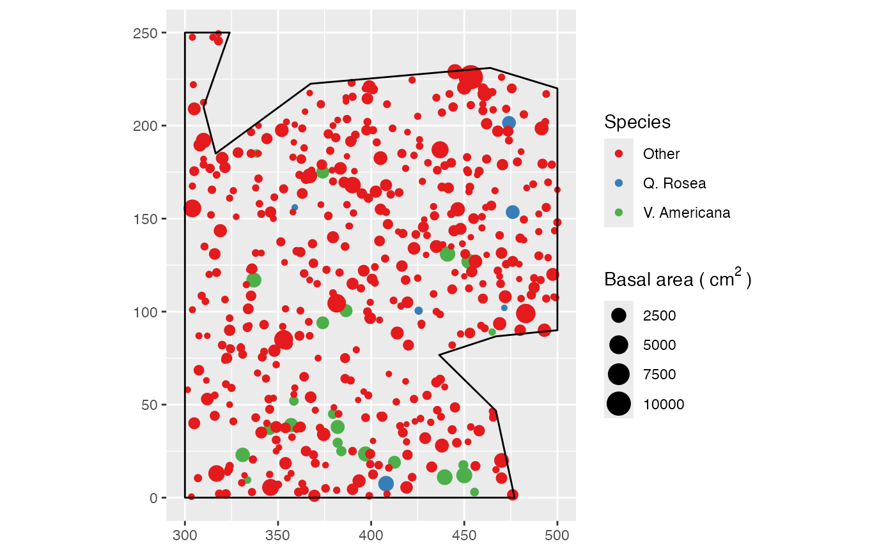
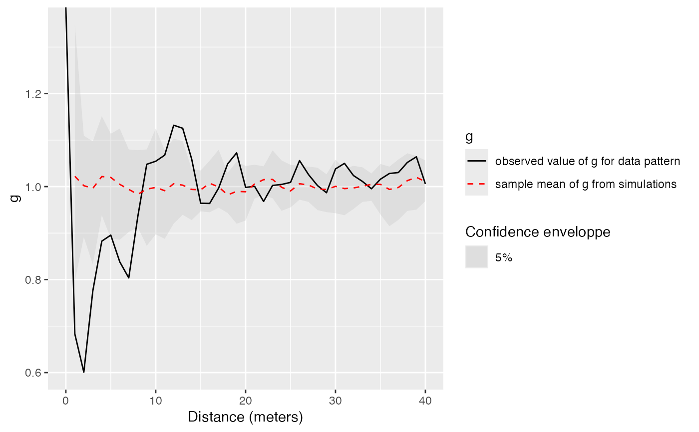

gEnvelope.RdSimulates point patterns according to the null hypothesis and returns the envelope of g according to the confidence level.
gEnvelope(X, r = NULL, NumberOfSimulations = 100, Alpha = 0.05, ReferenceType = "", NeighborType = "", SimulationType = "RandomPosition", Global = FALSE)
| X | A point pattern ( |
|---|---|
| r | A vector of distances. If |
| NumberOfSimulations | The number of simulations to run, 100 by default. |
| Alpha | The risk level, 5% by default. |
| ReferenceType | One of the point types. Default is all point types. |
| NeighborType | One of the point types. Default is all point types. |
| SimulationType | A string describing the null hypothesis to simulate. The null hypothesis may be "RandomPosition": points are drawn in a Poisson process (default); "RandomLabeling": randomizes point types, keeping locations unchanged; "PopulationIndependence": keeps reference points unchanged, shifts other point locations. |
| Global | Logical; if |
This envelope is local by default, that is to say it is computed separately at each distance. See Loosmore and Ford (2006) for a discussion.
The global envelope is calculated by iteration: the simulations reaching one of the upper or lower values at any distance are eliminated at each step. The process is repeated until Alpha / Number of simulations simulations are dropped. The remaining upper and lower bounds at all distances constitute the global envelope. Interpolation is used if the exact ratio cannot be reached.
An envelope object (envelope). There are methods for print and plot for this class.
The fv contains the observed value of the function, its average simulated value and the confidence envelope.
Duranton, G. and Overman, H. G. (2005). Testing for Localisation Using Micro-Geographic Data. Review of Economic Studies 72(4): 1077-1106.
Kenkel, N. C. (1988). Pattern of Self-Thinning in Jack Pine: Testing the Random Mortality Hypothesis. Ecology 69(4): 1017-1024.
Loosmore, N. B. and Ford, E. D. (2006). Statistical inference using the G or K point pattern spatial statistics. Ecology 87(8): 1925-1931.
Marcon, E. and F. Puech (2017). A typology of distance-based measures of spatial concentration. Regional Science and Urban Economics. 62:56-67.
Eric Marcon <Eric.Marcon@ecofog.gf>
data(paracou16) # Keep only 20% of points to run this example X <- as.wmppp(rthin(paracou16, 0.2)) plot(X)# Calculate confidence envelope (should be 1000 simulations, reduced to 10 to save time) r <- 0:40 NumberOfSimulations <- 10 # Plot the envelope autoplot(gEnvelope(X, r, NumberOfSimulations))#> Generating 10 simulations by evaluating expression ... #> 1, 2, 3, 4, 5, 6, 7, 8, 9, 10. #> #> Done.